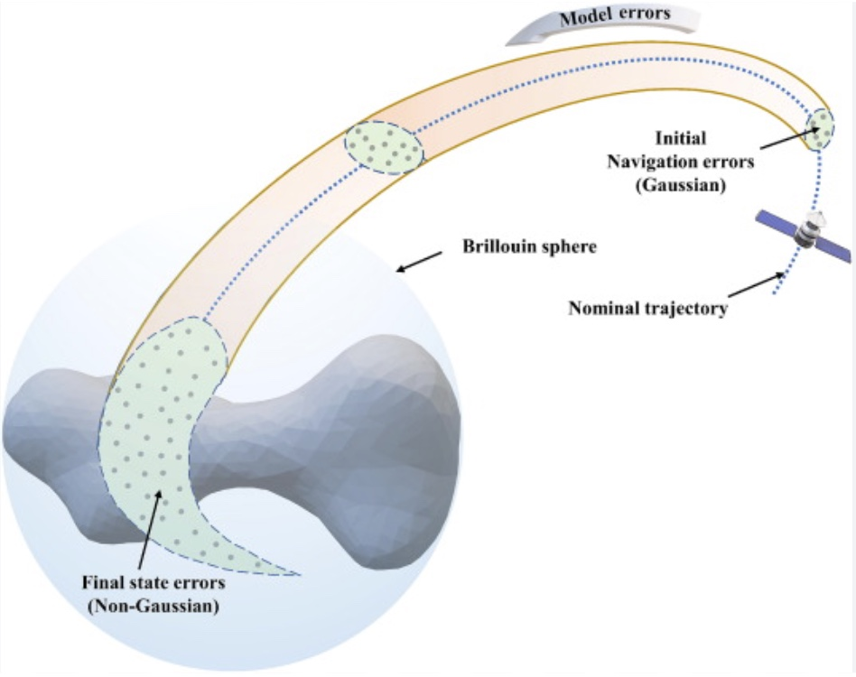
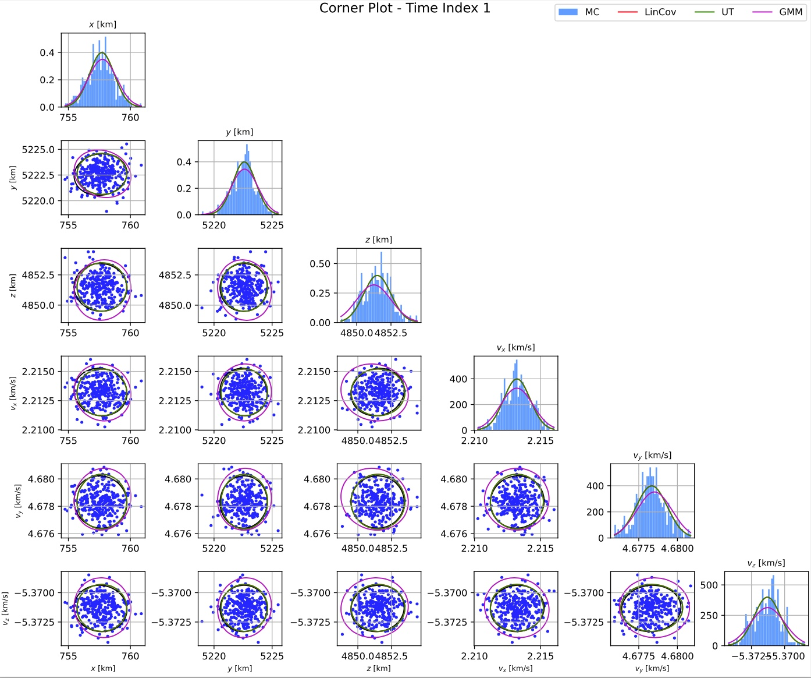
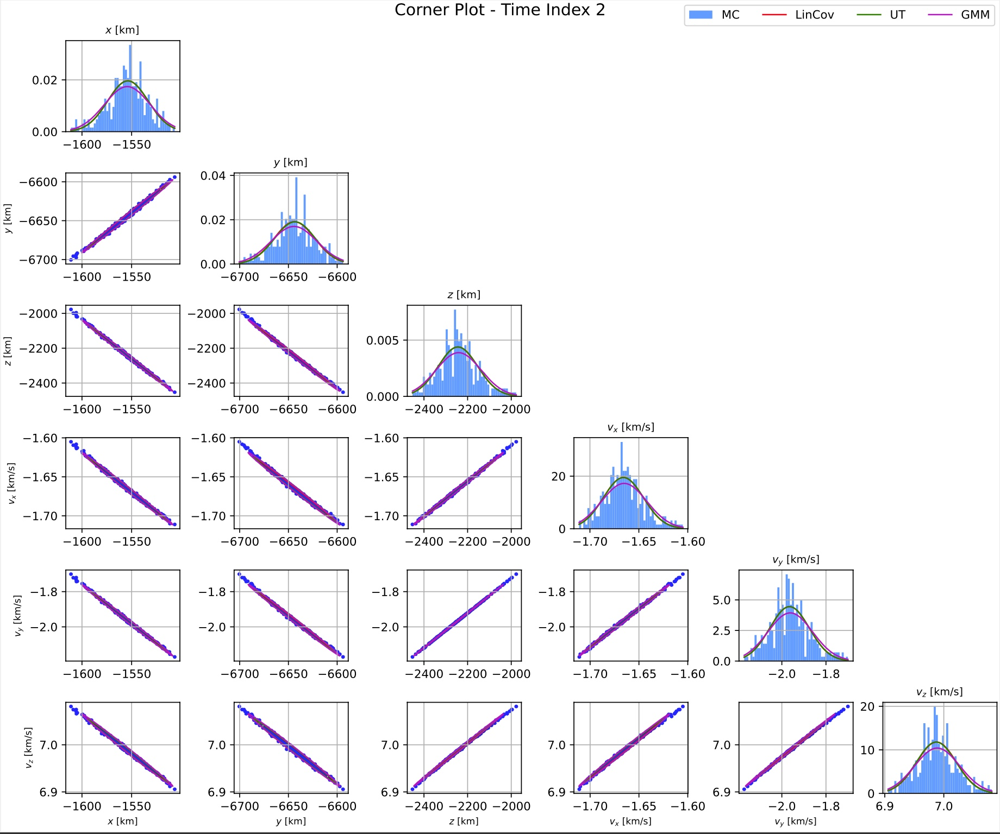
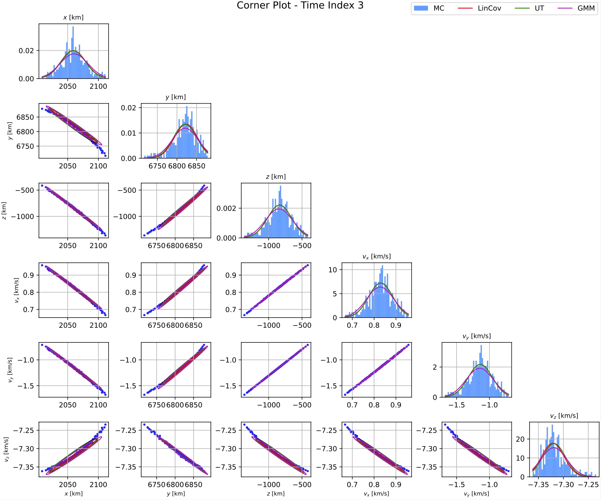
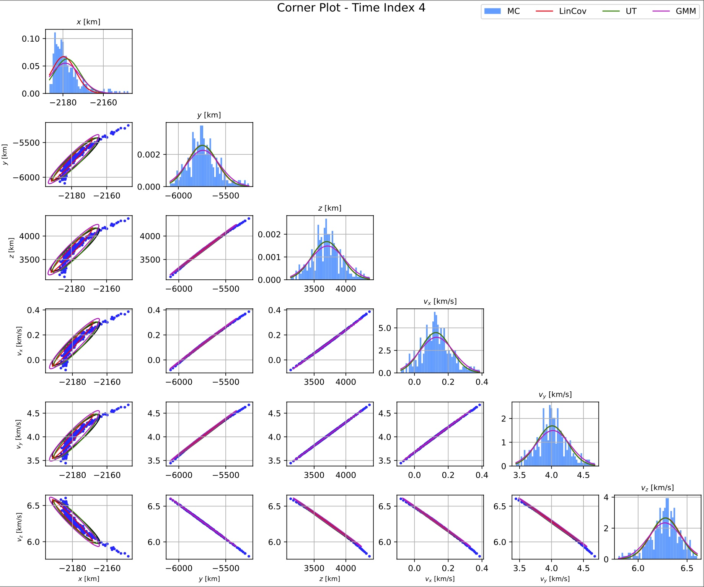

5.7) Uncertainty Propagation#
目的
不確定性を表現する手法（LinCov, U変換、GMM）について、定式化を学ぶ。
各手法のメリット・デメリットを整理する。
実際の数値シミュレーションを通して、各手法の特性を学ぶ。
5.7.1) Uncertainty Propagationとは#
宇宙工学ミッションにおいて、不確定性（Uncertainty）の把握は重要な意味をもつ。例えば、SSA(Space Situational Awareness)の一貫で、ある人工衛星と軌道上の物体の衝突確率を計算したいとしよう。このとき、衝突確率を計算するためには、将来時刻における各対象物の不確実性（e.g. 誤差楕円体）を把握する必要がある。 また、小惑星へのTouchdownを考えたとき、SRP や重力場の不確かさを含めても、着陸点分散が安全域内に収まるかを計算することは、ミッションの成立性検討に寄与する。
このように、初期状態 \(x(t_0)\) の不確定性がダイナミクスに従って時間伝搬されたとき、ある時刻 \(t\) でどんな確率分布（平均・分散・形）になるかを求めることを、Uncertainty Propagation と呼ぶ。Uncertainty Propagationにおいて障壁となるのは、ダイナミクスが非線形性を持つことである。小惑星探査を例にとると、非一様な重力分布、太陽光圧や第三天体による引力などの影響を受け、そのダイナミクスは強い非線形性を持つ。そのため、仮に初期状態量が正規分布をモデル化されるとしても、時間伝播に従って誤差分布は非ガウス性や多峰性を持つようになる。このような非線形ダイナミクスにおけるUncertainty Propagationを、効率的かつ高精度に実施したいというモチベーションのもと、多くの手法が提案されてきている。本項では、以下の手法を取り扱いながら、そのメリット・デメリットを整理していく。
LinCov (Linear Covariance Estimae)
U変換（Unscented Transform）
GMM(Gaussian Mixture Model)
{kind=link}

時間伝播に伴い非ガウス性を持つ誤差分布, 出典：An efficient and global method for orbit uncertainty propagation near irregular-shaped asteroids, Xuefen Zhang et al.
5.7.2) 問題設定#
一般的な非線形状態方程式を
あるいは離散時間系を
とする．ここで \(\mathbf{w}\) はプロセス雑音（摂動モデルの不確かさなど）を表す．
初期状態は確率的に
とみなす．軌道決定の結果として，ガウス分布
を仮定することが多い．
目的は，将来時刻 \(t_k\) における分布 \(p(\mathbf{x}_k)\)， あるいはその低次モーメント（平均 \(\boldsymbol\mu_k\)，共分散 \(\mathbf{P}_k\)）を， できるだけ正確かつ効率良く求めることである．
5.7.3) Linear Covariance（LinCov）#
非線形ダイナミクスを基準軌道近傍で線形化し，状態遷移行列 (State Transition Matrix, STM) を用いて平均・共分散を伝搬する．
連続時間で
を基準軌道 \(\mathbf{x}^\ast(t)\) 周りで線形化すると
となる．このとき STM \(\mathbf{\Phi}(t,t_0)\) は
を満たす．
雑音を無視すると，平均の伝搬は
共分散の伝搬は
となる．
雑音共分散 \(\mathbf{Q}(t)\) を考える場合は Lyapunov 方程式
で表される．
離散時間表現では
とし，
として共分散を伝搬する．
長所
計算コストが小さい（6 次元状態では 6×6 の STM のみ）
EKF や従来の Covariance Analysis と親和性が高い
「線形近似が妥当」な範囲では非常に有効
短所
強い非線形性（小天体近傍，長期間の \(J_2\) 摂動，レゾナンスなど）下では分布の歪みや多峰性を表現できない．
初期分布が非ガウスの場合の扱いが難しい．
5.7.4) Monte Carlo 法（MC）#
基本アイデア#
初期分布 \(p(\mathbf{x}_0)\) から多数のサンプルを生成し，
各サンプルを完全な非線形方程式で時間発展させ，
サンプル集合から統計量（平均，共分散，高次モーメントなど）を推定する．
定式化#
初期サンプリング
$\( \mathbf{x}_0^{(i)} \sim p(\mathbf{x}_0), \quad i=1,\dots,N \)$非線形伝搬
$\( \mathbf{x}^{(i)}_{k+1} = \Phi_\text{NL}\big(\mathbf{x}^{(i)}_k\big) \)\( ここで \)\Phi_\text{NL}$ は数値積分を含む非線形時間発展演算子．統計量の推定
平均：\[ \hat{\boldsymbol\mu}_k = \frac{1}{N}\sum_{i=1}^N \mathbf{x}^{(i)}_k \]共分散：
\[ \hat{\mathbf{P}}_k = \frac{1}{N-1}\sum_{i=1}^N (\mathbf{x}^{(i)}_k - \hat{\boldsymbol\mu}_k) (\mathbf{x}^{(i)}_k - \hat{\boldsymbol\mu}_k)^\mathrm{T} \]
特徴#
長所
非線形性が強くても「真のダイナミクス通り」に伝搬できるため， モデルが正しければ非常に正確．
非ガウス分布，多峰性，長い尾を持つ分布なども（サンプル数を増やせば）表現可能．
実装が容易．
短所
高精度な統計量を得るには多くのサンプルが必要で，計算コストが大きい．
Onboard でリアルタイムに用いるには重すぎることが多い．
高次元状態では「次元の呪い」により必要サンプル数が急増する．
5.7.5) Unscented Transform（U変換）#
UT は「少数の代表点（シグマ点）をうまく選ぶことで， 非線形変換後の平均・共分散を高精度に近似する」手法である．UKF のコア部分に相当する．
定式化#
状態次元を \(n\)，現在の平均・共分散を \(\boldsymbol\mu_k, \mathbf{P}_k\) とする．
パラメータ
\[ \lambda = \alpha^2 (n + \kappa) - n \]\(\alpha \in (0,1]\)：シグマ点の広がり
\(\kappa\)：補正パラメータ
\(\beta\)：分布形状情報（ガウスなら \(\beta=2\) が多い）
シグマ点生成
\[ \mathbf{\chi}_0 = \boldsymbol\mu_k \]\[ \mathbf{\chi}_i = \boldsymbol\mu_k + \left[\sqrt{(n+\lambda)\mathbf{P}_k}\right]_i, \quad i=1,\dots,n \]\[ \mathbf{\chi}_{i+n} = \boldsymbol\mu_k - \left[\sqrt{(n+\lambda)\mathbf{P}_k}\right]_i, \quad i=1,\dots,n \]重み
\[ W_0^{(m)} = \frac{\lambda}{n+\lambda}, \quad W_0^{(c)} = \frac{\lambda}{n+\lambda} + (1-\alpha^2 + \beta) \]\[ W_i^{(m)} = W_i^{(c)} = \frac{1}{2(n+\lambda)}, \quad i=1,\dots,2n \]非線形伝搬
\[ \mathbf{y}_i = \mathbf{f}(\mathbf{\chi}_i) \]平均・共分散の再構成
\[ \boldsymbol\mu_{k+1} = \sum_{i=0}^{2n} W_i^{(m)} \mathbf{y}_i \]\[ \mathbf{P}_{k+1} = \sum_{i=0}^{2n} W_i^{(c)} (\mathbf{y}_i - \boldsymbol\mu_{k+1}) (\mathbf{y}_i - \boldsymbol\mu_{k+1})^\mathrm{T} + \mathbf{Q}_k \]
特徴#
長所
2n+1 程度の評価で 2〜3 次精度のモーメント近似が得られる．
強い非線形性に対して LinCov よりも高精度．
ガウス分布のまま扱えるため，EKF を UKF に置き換えやすい．
短所
基本的に「初期分布はガウス」という前提．
分布形状の非ガウス性（多峰性など）は表現しにくい．
次元が大きくなるとシグマ点数 2n+1 も増え，計算コストが増加する．
5.7.6) Gaussian Mixture Model（ガウス混合分布）#
GMM は，「1つのガウスでは表現できない分布を，複数ガウスの混合で近似する」手法である．
近似モデル#
\(K\) を増やすことで，歪んだ分布，多峰性，長い尾を持つ分布を柔軟に表現できる．
伝搬の定式化（LinCov ベースの例）#
初期 GMM を
とする．各成分について LinCov で伝搬すると，
全体の分布は
平均・共分散は「混合の公式」により
で与えられる．
特徴#
長所
非ガウス分布（歪み，多峰性など）を表現可能．
各成分はガウスなので，LinCov, UT, Kalman Filter と相性が良い．
成分数 \(K\) を調整することで精度と計算量をトレードできる．
短所
成分数 \(K\) が大きくなると計算コストが増大．
コンポーネントの分割・マージの戦略設計が難しい．
高次元状態で \(K\) を増やしすぎると負荷が大きい．
5.7.7) 手法の比較と使い分け#
手法 |
非線形性の扱い |
非ガウス性 |
計算コスト |
|---|---|---|---|
LinCov |
1次（線形近似） |
✗ |
◎ 低い |
MC |
正確（モデル通り） |
○（サンプル次第） |
✕ 高い |
UT |
2〜3次モーメント近似 |
△（基本ガウス） |
○ 中程度 |
GMM |
成分ごとの手法次第 |
◎ |
△〜✕ |
大まかな誤差評価・初期設計段階では LinCov が簡便で有用．
小天体近傍や長期摂動など強い非線形性を含む場合は UT / GMM / MC を組み合わせて検討する．
衝突確率評価など安全性クリティカルな場面では， MC や GMM により分布の尾部まで丁寧に評価することが望ましい．
5.7.8) 演習問題#
import numpy as np
from numpy.linalg import norm, inv, det
from scipy.integrate import solve_ivp
from scipy.linalg import sqrtm
from scipy.stats import multivariate_normal, chi2
import sympy as sp
from IPython.display import display
import matplotlib.pyplot as plt
from mpl_toolkits.mplot3d import Axes3D # noqa: F401 (needed for 3‑D)
#plt.rcParams['text.usetex'] = True # keep LaTeX typography
# -------------------------------------------------------------------------
# SECTION 1 ─ CREATE REFERENCE TRAJECTORY
# -------------------------------------------------------------------------
# Constants
coeffs = np.array([0.0, 1.082626925638815e-3]) # [J1,J2]
R_EARTH = 6378.1363 # km
MU = 398600.4415 # km^3/s^2
L_MAX = 2
AREA = 3e-6 # km^2 (cross‑section)
MASS = 970.0 # kg
CD = 2.0
PARAM_MEAS = 9
# Initial state (km, km/s)
state0 = np.array([757.7, 5222.607, 4851.5, 2.21321, 4.67834, -5.3713])
# Append 6×6 identity (flattened) as initial STM
state0 = np.hstack([state0, np.eye(6).ravel()])
# -------------------------------------------------------------------------
# Symbolic pre‑computations
# -------------------------------------------------------------------------
def precompute_zonal_sph(R_val: float, l_max: int):
"""Pre-compute zonal-harmonic acceleration & Jacobian symbolic lambdas."""
x, y, z, vx, vy, vz, mu_sym = sp.symbols('x y z vx vy vz mu')
coeffs_sym = sp.symbols(f'J0:{l_max}')
r = sp.sqrt(x**2 + y**2 + z**2)
phi = sp.asin(z / r)
U = - mu_sym / r
for l in range(1, l_max+1):
U += mu_sym/r * coeffs_sym[l-1] * (R_val/r)**l * sp.legendre(l, sp.sin(phi))
acc = - sp.Matrix([sp.diff(U, x), sp.diff(U, y), sp.diff(U, z)])
a_aug = sp.Matrix.vstack(acc, sp.zeros(1+len(coeffs_sym), 1)) # extra µ,Jl rows
acc_fun = sp.lambdify((x, y, z, mu_sym, coeffs_sym), a_aug, 'numpy')
# full dummy state for Jacobian: [vx,vy,vz,acc_aug]
f_full = sp.Matrix.vstack(sp.Matrix([vx, vy, vz]), a_aug)
A_sym = f_full.jacobian([x, y, z, vx, vy, vz, mu_sym, *coeffs_sym])
A_fun = sp.lambdify((x, y, z, vx, vy, vz, mu_sym, coeffs_sym), A_sym, 'numpy')
return acc_fun, A_fun
def precompute_drag(area: float, mass: float, r_earth: float):
"""Symbolic drag acceleration & Jacobian."""
omega_E = 7.2921158553e-5 # rad/s
rho0 = 3.614e-4 # kg/km³
r0 = 700.0 + r_earth # km
H = 88.6670 # km
x, y, z, vx, vy, vz, cd = sp.symbols('x y z vx vy vz cd')
r_vec = sp.Matrix([x, y, z])
v_vec = sp.Matrix([vx, vy, vz])
v_rel = v_vec - sp.Matrix([0, 0, omega_E]).cross(r_vec)
vmag = sp.sqrt(v_rel.dot(v_rel))
r = sp.sqrt(x**2 + y**2 + z**2)
rho = rho0 * sp.exp(-(r-r0)/H)
a_drag = -0.5 * (cd*area/mass) * rho * vmag * v_rel
a_aug = sp.Matrix.vstack(a_drag, sp.zeros(1,1)) # placeholder d(cd)
a_fun = sp.lambdify((x,y,z,vx,vy,vz,cd), a_aug, 'numpy')
f_full = sp.Matrix.vstack(sp.Matrix([vx,vy,vz]), a_aug)
A_sym = f_full.jacobian([x,y,z,vx,vy,vz,cd])
A_fun = sp.lambdify((x,y,z,vx,vy,vz,cd), A_sym, 'numpy')
return a_fun, A_fun
ACC_SPH, A_SPH = precompute_zonal_sph(R_EARTH, L_MAX)
ACC_DRAG, A_DRAG = precompute_drag(AREA, MASS, R_EARTH)
from sympy import symbols, sin, cos, latex, pprint, init_printing
from IPython.display import Math
init_printing()
Math(r'$$' + latex(ACC_DRAG) + r'$$')
from numba import njit
# -------------------------------------------------------------------------
# Helper: ECI→ECEF Direction‑Cosine Matrix
# -------------------------------------------------------------------------
def dcm_eci_to_ecef(t: float):
omega_earth = 7.2921158553e-5
theta = omega_earth*t
return np.array([[ np.cos(theta), np.sin(theta), 0],
[-np.sin(theta), np.cos(theta), 0],
[ 0, 0, 1]])
# -------------------------------------------------------------------------
# Core dynamics (identical to MATLAB sc_Dynamics + sc_ODE)
# -------------------------------------------------------------------------
def sc_dynamics(t, state, coeffs_vals, mu_val, cd):
"""Return ẋ = f(x) and dfdx for 6-state S/C plus STM."""
pos = state[:3]
vel = state[3:6]
# ECI→ECEF
C_e2f = dcm_eci_to_ecef(t)
pos_f = C_e2f @ pos
# Zonal harmonics (ECEF frame, then rotate back)
a_sph = ACC_SPH(*pos_f, mu_val, coeffs_vals)[0:3].astype(float)
a_sph = C_e2f.T @ a_sph
# Drag (direct in ECI)
a_drag = ACC_DRAG(*pos, *vel, cd)[0:3].astype(float)
acc = a_sph + a_drag
# Reshape acc to (3,) to match dy[3:6] shape
acc = acc.reshape(3)
# Jacobian if STM present
if state.size > 6:
A_sph = A_SPH(*pos_f, 0,0,0, mu_val, coeffs_vals)[3:6, 0:3].astype(float)
A_sph = C_e2f.T @ A_sph @ C_e2f
A_drag = A_DRAG(*pos, *vel, cd)[3:6, 0:6].astype(float)
Ar = A_sph + A_drag[:,0:3]
Av = A_drag[:,3:6]
A = np.block([[np.zeros((3,3)), np.eye(3)],
[Ar, Av]])
return acc, A
return acc, None
def sc_ode(t, y):
"""Derivative for solve_ivp: propagate 6-state + flattened 36-el STM."""
n = 6
pos, vel = y[:3], y[3:6]
acc, A = sc_dynamics(t, y, coeffs, MU, CD)
dy = np.zeros_like(y)
dy[:3] = vel
dy[3:6] = acc
# STM
stm = y[6:].reshape(n, n)
dy_stm = (A @ stm).ravel()
dy[6:] = dy_stm
return dy
# -------------------------------------------------------------------------
# Numerical integration of the reference orbit (solve_ivp ≈ ode45)
# -------------------------------------------------------------------------
T_ORBIT = 24*3600 # one day s
t_span = (0.0, T_ORBIT)
t_eval = np.arange(0, T_ORBIT+1.0, 1.0) # 1‑s step, like MATLAB 0:T_orbit
sol_ref = solve_ivp(sc_ode, t_span, state0, t_eval=t_eval, rtol=2.22e-10, atol=2.22e-10, method='RK45')
# 3‑D orbit plot
fig = plt.figure(figsize=(6,5))
ax = fig.add_subplot(111, projection='3d')
ax.plot(sol_ref.y[0], sol_ref.y[1], sol_ref.y[2], 'r.', ms=1.5)
# rudimentary Earth
u,v = np.mgrid[0:2*np.pi:40j, 0:np.pi:20j]
ax.plot_wireframe(R_EARTH*np.cos(u)*np.sin(v),
R_EARTH*np.sin(u)*np.sin(v),
R_EARTH*np.cos(v), color='k', lw=0.2, alpha=.3)
ax.set_xlabel('x (km)')
ax.set_ylabel('y (km)')
ax.set_zlabel('z (km)')
ax.set_aspect('auto')
fig.savefig('OrbitUQ.pdf')
plt.show()
plt.close(fig)
# -------------------------------------------------------------------------
# SECTION 2 ─ INITIAL UNCERTAINTY AND ANALYSIS TIMES
# -------------------------------------------------------------------------
sigma_pos = 1.0 # km
sigma_vel = 1e-3 # km/s
P0 = np.diag([sigma_pos**2]*3 + [sigma_vel**2]*3)
x0 = state0[:6]
STM0 = np.eye(6)
t_eval_hours = np.array([6,12,18,24])
t_eval_sec = t_eval_hours*3600
# -------------------------------------------------------------------------
# SECTION 3 ─ LINEAR COVARIANCE PROPAGATION
# -------------------------------------------------------------------------
def propagate_nominal_and_stm(t_grid):
"""Integrate only once for all epochs (identical to MATLAB ode113 call)."""
def rhs(t, y): return sc_ode(t, y)
sol = solve_ivp(rhs, (t_grid[0], t_grid[-1]),
np.hstack([x0, STM0.ravel()]),
t_eval=t_grid, rtol=2.22e-10, atol=2.22e-10)
return sol.y.T # shape len(t_grid)×42
nom_all = propagate_nominal_and_stm(t_eval_sec)
lin_states = np.zeros((6, len(t_eval_sec)))
lin_covs = np.zeros((6,6,len(t_eval_sec)))
for i, row in enumerate(nom_all):
x_nom = row[:6]
stm = row[6:].reshape(6,6)
lin_states[:,i] = x_nom
lin_covs[:,:,i] = stm @ P0 @ stm.T
# -------------------------------------------------------------------------
# SECTION 4 ─ MONTE‑CARLO PROPAGATION
# -------------------------------------------------------------------------
N_MC = 300
rng = np.random.default_rng(42)
X_samples = rng.multivariate_normal(x0, P0, N_MC).T
MC_states = np.zeros((6, N_MC, len(t_eval_sec)))
for j in range(N_MC):
ic = np.hstack([X_samples[:,j], STM0.ravel()])
sol = solve_ivp(sc_ode, (t_eval_sec[0], t_eval_sec[-1]), ic,
t_eval=t_eval_sec, rtol=2.22e-10, atol=2.22e-10)
MC_states[:,j,:] = sol.y[:6]
print(f"{j/N_MC*100} %")
MC_mean = MC_states.mean(axis=1)
MC_cov = np.zeros((6,6,len(t_eval_sec)))
for i in range(len(t_eval_sec)):
X = MC_states[:,:,i]
MC_cov[:,:,i] = np.cov(X)
x0.reshape(-1,1)
x0.reshape(-1,1)
# -------------------------------------------------------------------------
# SECTION 5 ─ UNSCENTED TRANSFORM
# -------------------------------------------------------------------------
n = 6
alpha,beta,kappa = 1.0, 2.0, 3-n
lam = alpha**2*(n+kappa) - n
gamma = np.sqrt(n+lam)
S0 = sqrtm(P0)
sigma_pts = np.hstack([x0.reshape(-1,1),
x0.reshape(-1,1)+gamma*S0,
x0.reshape(-1,1)-gamma*S0])
w_m = np.hstack([lam/(n+lam), np.full(2*n, 1/(2*(n+lam)))])
# w_cいらなくない？
w_c = w_m.copy(); w_c[0] += 1-alpha**2+beta
ut_traj = np.zeros((6, sigma_pts.shape[1], len(t_eval_sec)))
for k in range(sigma_pts.shape[1]):
ic = np.hstack([sigma_pts[:,k], STM0.ravel()])
sol = solve_ivp(sc_ode, (t_eval_sec[0], t_eval_sec[-1]), ic,
t_eval=t_eval_sec, rtol=2.22e-10, atol=2.22e-10)
ut_traj[:,k,:] = sol.y[:6]
ut_states = np.zeros((6,len(t_eval_sec)))
ut_covs = np.zeros((6,6,len(t_eval_sec)))
for i in range(len(t_eval_sec)):
X = ut_traj[:,:,i]
mu = X @ w_m
dx = X - mu[:,None]
P = sum(w_c[k]*(dx[:,k:k+1]@dx[:,k:k+1].T) for k in range(X.shape[1]))
ut_states[:,i] = mu
ut_covs[:,:,i] = P
w_m = np.hstack([lam/(n+lam), np.full(2*n, 1/(2*(n+lam)))])
w_m
sigma_pts.shape[1]
t_eval_sec
# -------------------------------------------------------------------------
# SECTION 6 ─ GAUSSIAN‑MIXTURE PROPAGATION (fixed‑cov variant)
# -------------------------------------------------------------------------
K = 30
mu_gmm_ic = rng.multivariate_normal(x0, P0, K).T
pdf_vals = multivariate_normal(mean=x0, cov=P0).pdf(mu_gmm_ic.T)
w_gmm = pdf_vals/pdf_vals.sum()
P_gmm_ic = np.repeat(P0[:,:,None], K, axis=2)
gmm_states = np.zeros((6,K,len(t_eval_sec)))
gmm_covs = np.zeros((6,6,K,len(t_eval_sec)))
for k in range(K):
ic = np.hstack([mu_gmm_ic[:,k], STM0.ravel()])
sol = solve_ivp(sc_ode,(t_eval_sec[0],t_eval_sec[-1]),ic,
t_eval=t_eval_sec, rtol=2.22e-10, atol=2.22e-10)
for i in range(len(t_eval_sec)):
Phi = sol.y[6:,i].reshape(6,6)
gmm_states[:,k,i] = sol.y[:6,i]
gmm_covs[:,:,k,i] = Phi @ P_gmm_ic[:,:,k] @ Phi.T
print(f"{k/K*100} %")
gmm_mean = np.zeros((6,len(t_eval_sec)))
gmm_cov = np.zeros((6,6,len(t_eval_sec)))
for i in range(len(t_eval_sec)):
mu = sum(w_gmm[k]*gmm_states[:,k,i] for k in range(K))
P = sum(w_gmm[k]*(gmm_covs[:,:,k,i] +
np.outer(gmm_states[:,k,i]-mu,
gmm_states[:,k,i]-mu)) for k in range(K))
gmm_mean[:,i] = mu
gmm_cov[:,:,i] = P
plt.rcParams['text.usetex'] = False
from scipy.stats import norm # PDF 用
from matplotlib.patches import Ellipse
# ---------- 前準備 ----------
n = 6
t_indices = range(4) # 0,1,2,3 → MATLAB の 1:4 に対応
labels = [r'$x$ [km]', r'$y$ [km]', r'$z$ [km]',
r'$v_x$ [km/s]', r'$v_y$ [km/s]', r'$v_z$ [km/s]']
# ---------- 共分散楕円プロット用ヘルパ -------------------------
def plot_cov_ellipse(C, mu, nsig=2, ax=None, **kw):
"""
C: 2x2 共分散行列, mu: 2 要素平均, nsig: σ の倍率
"""
if ax is None:
ax = plt.gca()
vals, vecs = np.linalg.eigh(C)
order = vals.argsort()[::-1]
vals, vecs = vals[order], vecs[:, order]
width, height = 2 * nsig * np.sqrt(vals)
angle = np.degrees(np.arctan2(*vecs[:, 0][::-1]))
e = Ellipse(xy=mu, width=width, height=height, angle=angle,
fill=False, **kw)
ax.add_patch(e)
# ---------- メインループ（時刻ごとに新しい図を作る） -------------
for t_idx in t_indices:
# Monte Carlo サンプル
X_mc = MC_states[:, :, t_idx] # shape 6 x N_MC
mu_mc = X_mc.mean(axis=1)
C_mc = np.cov(X_mc)
# 他手法
mu_lin, C_lin = lin_states[:, t_idx], lin_covs[:, :, t_idx]
mu_ut , C_ut = ut_states[:, t_idx] , ut_covs[:, :, t_idx]
mu_gmm, C_gmm = gmm_mean[:, t_idx] , gmm_cov[:, :, t_idx]
# Figure 作成
fig = plt.figure(figsize=(12, 10), constrained_layout=True)
fig.suptitle(f'Corner Plot - Time Index {t_idx+1}', fontsize=14)
legend_shown = False
for i in range(n):
for j in range(i+1):
ax = fig.add_subplot(n, n, i*n + j + 1)
# 対角（ヒストグラムと PDF）
if i == j:
ax.hist(X_mc[i], bins=50, density=True,
color=(0.3, 0.6, 1.0), label='MC')
x_vals = np.linspace(X_mc[i].min(), X_mc[i].max(), 200)
ax.plot(x_vals, norm.pdf(x_vals, mu_lin[i], np.sqrt(C_lin[i,i])),
'r-', lw=1.2, label='LinCov')
ax.plot(x_vals, norm.pdf(x_vals, mu_ut[i], np.sqrt(C_ut[i,i])),
'g-', lw=1.2, label='UT')
ax.plot(x_vals, norm.pdf(x_vals, mu_gmm[i], np.sqrt(C_gmm[i,i])),
'm-', lw=1.2, label='GMM')
ax.set_title(labels[i], fontsize=9)
# 非対角（散布図と楕円）
else:
ax.scatter(X_mc[j], X_mc[i], s=5, c='b')
kw = dict(nsig=2, lw=1.2)
# 1回だけラベル付きで描いて凡例用に
if not legend_shown:
plot_cov_ellipse(C_mc[[j,i]][:,[j,i]], mu_mc[[j,i]],
edgecolor='k', label='MC', **kw)
plot_cov_ellipse(C_lin[[j,i]][:,[j,i]], mu_lin[[j,i]],
edgecolor='r', label='LinCov', **kw)
plot_cov_ellipse(C_ut[[j,i]][:,[j,i]], mu_ut[[j,i]],
edgecolor='g', label='UT', **kw)
plot_cov_ellipse(C_gmm[[j,i]][:,[j,i]], mu_gmm[[j,i]],
edgecolor='m', label='GMM', **kw)
legend_shown = True
else:
plot_cov_ellipse(C_mc[[j,i]][:,[j,i]], mu_mc[[j,i]],
edgecolor='k', **kw)
plot_cov_ellipse(C_lin[[j,i]][:,[j,i]], mu_lin[[j,i]],
edgecolor='r', **kw)
plot_cov_ellipse(C_ut[[j,i]][:,[j,i]], mu_ut[[j,i]],
edgecolor='g', **kw)
plot_cov_ellipse(C_gmm[[j,i]][:,[j,i]], mu_gmm[[j,i]],
edgecolor='m', **kw)
if i == n-1:
ax.set_xlabel(labels[j], fontsize=8)
if j == 0:
ax.set_ylabel(labels[i], fontsize=8)
ax.grid(True)
# 全体凡例
handles, labels_ = ax.get_legend_handles_labels()
fig.legend(handles[:4], ['MC', 'LinCov', 'UT', 'GMM'],
loc='upper right', ncol=4, fontsize=10)
# PDF 保存
fig.savefig(f'corner_plot_t{t_idx+1:02d}.pdf', dpi=300)
#plt.close(fig)
plt.show()
# -------------------------------------------------------------------------
# SECTION 8 ─ NUMERICAL COMPARISON (norms & KL divergence)
# -------------------------------------------------------------------------
for idx in range(len(t_eval_sec)):
print(f'\n--- Time {t_eval_hours[idx]} hr ---')
Xmc = MC_states[:,:,idx]; mu_mc = Xmc.mean(axis=1); C_mc = np.cov(Xmc)
for name,mu,C in [('LinCov',lin_states[:,idx],lin_covs[:,:,idx]),
('UT' ,ut_states[:,idx] ,ut_covs[:,:,idx]),
('GMM' ,gmm_mean[:,idx] ,gmm_cov[:,:,idx])]:
mean_err = norm(mu-mu_mc)
cov_err = norm(C-C_mc,'fro')
mean_pct = 100*mean_err/norm(mu_mc) if norm(mu_mc)>0 else 0
cov_pct = 100*cov_err /norm(C_mc,'fro')
delta_mu = mu_mc-mu
kl = .5*(np.trace(inv(C)@C_mc) + delta_mu@inv(C)@delta_mu
- n + np.log(det(C)/det(C_mc)))
print(f'[{name}] ‖Δμ‖={mean_err:.3e} ({mean_pct:.4f} %) '
f'‖ΔP‖={cov_err:.3e} ({cov_pct:.4f} %) KL={kl:.5f}')
# -------------------------------------------------------------------------
# SECTION 9 ─ 2‑σ CONTAINMENT OF MC SAMPLES
# -------------------------------------------------------------------------
for idx in range(len(t_eval_sec)):
print(f'\n--- 2σ containment at {t_eval_hours[idx]} hr ---')
X = MC_states[:,:,idx]
for nm,mu,C in [('LinCov',lin_states[:,idx],lin_covs[:,:,idx]),
('UT' ,ut_states[:,idx] ,ut_covs[:,:,idx]),
('GMM' ,gmm_mean[:,idx] ,gmm_cov[:,:,idx])]:
dx = X-mu[:,None]
mahal2 = np.sum(inv(C)@dx * dx, axis=0)
inside = (mahal2 <= chi2.ppf(0.954, n))
pct = 100*inside.sum()/N_MC
print(f' {nm:6s}: {pct:6.2f} % of MC within 2σ ellipsoid')
# -------------------------------------------------------------------------
print('\n=== DONE – all figures/statistics reproduced in Python ===')
{kind=link}

{kind=link}

{kind=link}

{kind=link}
